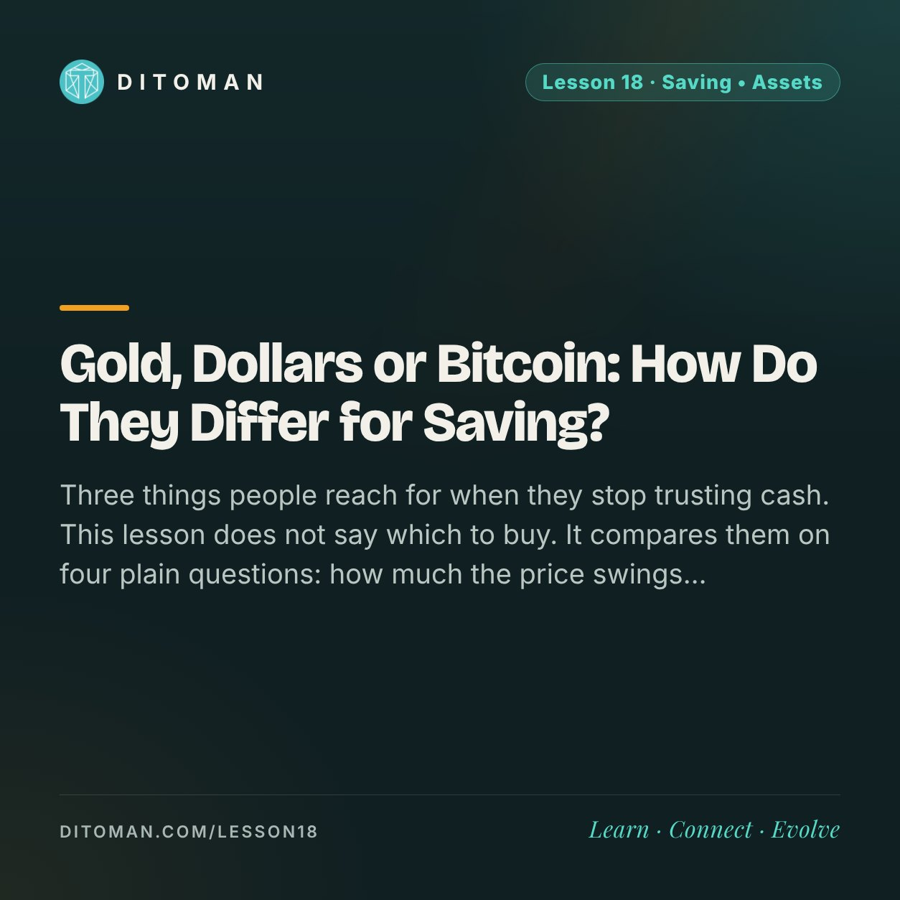

Or, dollars ou bitcoin : quelles différences pour épargner ?
طلا، دلار یا بیتکوین؛ فرقشان برای پسانداز چیست؟
Trois choses vers lesquelles on se tourne quand on ne fait plus confiance aux espèces. Cette leçon ne dit pas laquelle acheter. Elle les compare sur quatre questions simples : combien le prix varie, s'il se vend facilement, ce qu'il coûte à conserver et ce qui peut mal tourner.
سه چیزی که آدمها وقتی اعتمادشان به پول نقد کم میشود سراغش میروند. این درس نمیگوید کدام را بخرید. آنها را با چهار پرسش ساده مقایسه میکند: قیمت چقدر بالا و پایین میرود، چقدر راحت فروخته میشود، نگه داشتنش چه هزینهای دارد و چه چیزی ممکن است خراب شود.
Contenu de la leçon
محتوای درس
Lisez la leçon en anglais ou en persan.
درس را به فارسی یا انگلیسی بخوانید.
La leçon 12 a montré ce que l'inflation fait à l'argent qui dort. La pensée suivante est naturelle : alors je devrais détenir autre chose. Dans beaucoup de familles, la réponse est la même depuis des générations : l'or ou le dollar. Ces dernières années, un troisième nom s'est invité dans la conversation : le bitcoin.
On débat de la meilleure option comme s'il n'y avait qu'une réponse. Il n'y en a pas, car les trois sont de nature différente. On peut les comparer équitablement avec les quatre mêmes questions.
D'abord : épargner n'est pas spéculer
Épargner c'est mettre de l'argent de côté pour qu'il soit là quand on en a besoin. Le but est de garder le pouvoir d'achat.
Investissement c'est accepter un risque pour un rendement issu de quelque chose de productif : une entreprise, un bien immobilier, un prêt.
Spéculer c'est acheter quelque chose surtout parce qu'on s'attend à ce que le prix monte.
Le même actif peut servir à chacun des trois. Ce qui change, c'est votre horizon et la perte que vous pouvez supporter. L'argent dont vous aurez besoin dans six mois n'est pas du tout dans la même situation que celui que vous ne toucherez pas avant dix ans.
Question 1 : de combien le prix varie-t-il ?
Les trois bougent, mais pas dans la même mesure.
Le dollar est celui qui bouge le moins face aux biens à court terme, même s'il perd lentement du pouvoir d'achat avec sa propre inflation. L'inflation américaine a culminé au-dessus de 9 % mi-2022.
Or connaît de longues périodes calmes puis des mouvements brusques. Après son pic de 2011, près de 1 900 dollars l'once, il a perdu environ 45 % sur les quatre années suivantes avant de se redresser plus tard.
Bitcoin varie beaucoup plus. D'environ 69 000 dollars en novembre 2021, il est tombé sous 16 000 dollars un an plus tard, soit une chute de plus de 75 %, avant d'atteindre de nouveaux sommets au-dessus de 126 000 dollars en octobre 2025.
Une forte variation n'est ni bonne ni mauvaise en soi. Elle décide combien de temps vous devez pouvoir attendre.
Question 2 : se vend-il facilement ?
C'est la liquidité : reconvertir l'actif en argent utilisable rapidement et près du prix affiché.
Les dollars et les pièces d'or ont des marchés profonds presque partout, mais les prix d'achat et de vente diffèrent. Cet écart, la spread, est un coût que vous payez deux fois. Pour les petites pièces d'or, et pour les bijoux avec frais de façon, l'écart est large.
Le bitcoin s'échange 24 h/24, et de gros montants peuvent être vendus en quelques minutes sur les grandes plateformes. En pratique, votre propre liquidité dépend toutefois de votre accès à une plateforme et à une banque ou un intermédiaire de l'autre côté.
Question 3 : combien coûte sa conservation ?
Les dollars physiques et l'or doivent être stockés à l'abri du vol, du feu et des dégâts. Les billets usés ou anciens peuvent être plus difficiles à vendre.
Le bitcoin ne pèse rien, mais le conserver en sécurité suppose de gérer une clé ou de faire confiance à un dépositaire, comme l'a expliqué la leçon 13.
Aucun des trois ne rapporte d'intérêts en restant immobile. C'est une vraie différence avec un dépôt, une obligation ou une entreprise.
Question 4 : qu'est-ce qui peut mal tourner ?
| Dollars (espèces) | Or | Bitcoin | |
|---|---|---|---|
| Prix | Lente perte face à l'inflation | Longues périodes de faiblesse | Chutes de plus de moitié |
| Le conserver | Vol, dégâts, billets usés | Vol, contrefaçons, pureté | Clé perdue, arnaques, plateforme en faillite |
| Le vendre | Écart d'achat et de vente | Écart et frais de façon | Nécessite l'accès à une plateforme |
| Règles | Limites de détention ou de négociation | Taxes et limites commerciales | Réglementation changeante |
Chaque ligne est un type de risque différent. Remarquez qu'aucune colonne n'est vide.
Pourquoi on répartit son épargne
Comme les trois échouent de façons différentes, ils ne chutent pas toujours ensemble. Détenir plus d'un type d'actif, en montants adaptés au moment où vous aurez besoin de l'argent, s'appelle la diversification. Cela ne supprime pas le risque. Cela évite de dépendre d'une seule histoire qui doit être juste.
La part de chacun, si part il y a, dépend de vos revenus, de vos besoins et des règles de votre pays. C'est une décision personnelle que cette leçon ne peut pas prendre à votre place.
Ce qu'il faut en retenir
Savoir si vous épargnez, investissez ou spéculez avant de choisir un actif.
Comparez les actifs sur les mêmes quatre questions : variation, liquidité, coût de conservation et ce qui peut mal tourner.
Le dollar est plus stable mais perd lentement de la valeur. L'or est ancien et lent, avec de longues périodes de faiblesse. Le bitcoin peut monter vite et chuter de plus de moitié.
Le spread est un coût payé aux deux bouts.
Rien ici n'est une recommandation d'acheter ou de vendre quoi que ce soit.
درس ۱۲ نشان داد تورم با پول نقدی که بیحرکت میماند چه میکند. فکر بعدی طبیعی است: پس باید چیز دیگری نگه دارم. در خیلی از خانوادهها جواب نسلهاست که یکی بوده: طلا یا دلار. در چند سال اخیر نام سومی هم به این گفتوگو اضافه شده: بیتکوین.
آدمها طوری بحث میکنند که انگار یک جواب درست وجود دارد. وجود ندارد، چون این سه از یک جنس نیستند. میشود آنها را منصفانه با چهار پرسش یکسان کنار هم گذاشت.
اول: پسانداز با سفتهبازی فرق دارد
پسانداز یعنی کنار گذاشتن پول تا وقتی لازم شد، باشد. هدفش حفظ قدرت خرید است.
سرمایهگذاری یعنی پذیرفتن ریسک برای بازدهی که از یک کار مولد میآید: کسبوکار، ملک یا وام.
سفتهبازی یعنی خریدن چیزی، بیشتر به این امید که قیمتش بالا برود.
یک دارایی میتواند برای هر سه به کار برود. چیزی که فرق میکند افق زمانی شما و مقدار ضرری است که تحملش را دارید. پولی که شش ماه دیگر لازم میشود با پولی که ده سال به آن دست نمیزنید در دو وضع کاملاً متفاوت است.
پرسش ۱: قیمت چقدر بالا و پایین میرود؟
هر سه تکان میخورند، ولی نه به یک اندازه.
دلار در کوتاهمدت کمتر از همه در برابر کالاها تکان میخورد، هرچند با تورم خودش آرامآرام قدرت خرید از دست میدهد. تورم آمریکا در میانهی ۲۰۲۲ از ۹ درصد بالاتر رفت.
طلا دورههای آرام طولانی دارد و بعد حرکتهای تند. بعد از اوج سال ۲۰۱۱ نزدیک ۱٬۹۰۰ دلار برای هر اونس، در چهار سال بعد حدود ۴۵ درصد افت کرد و بعدها دوباره بالا رفت.
بیتکوین خیلی بیشتر نوسان دارد. از حدود ۶۹ هزار دلار در نوامبر ۲۰۲۱ یک سال بعد به زیر ۱۶ هزار دلار رسید، یعنی افتی بیش از ۷۵ درصد، و بعدها در اکتبر ۲۰۲۵ به اوج تازهای بالای ۱۲۶ هزار دلار رفت.
نوسان زیاد بهخودیخود خوب یا بد نیست. تعیین میکند چقدر باید بتوانید صبر کنید.
پرسش ۲: چقدر راحت فروخته میشود؟
این همان نقدشوندگی است: تبدیل سریع دارایی به پول قابلخرج، با قیمتی نزدیک به قیمت اعلامشده.
دلار و سکهی طلا تقریباً همهجا بازار پررونقی دارند، ولی قیمت خرید و فروششان یکی نیست. این فاصله، هزینهای است که دو بار میپردازید. برای قطعههای کوچک طلا و برای زیورآلاتی که اجرت ساخت دارند، این فاصله زیاد است.
بیتکوین شبانهروز معامله میشود و در صرافیهای بزرگ میشود مبلغ زیادی را در چند دقیقه فروخت. ولی در عمل، نقدشوندگی برای خودِ شما به دسترسیتان به صرافی و به بانک یا واسطهی آن طرف بستگی دارد.
پرسش ۳: نگه داشتنش چه هزینهای دارد؟
دلار و طلای فیزیکی را باید جایی نگه داشت که از دزدی، آتش و آسیب در امان باشد. اسکناس فرسوده یا قدیمیتر هم ممکن است سختتر فروخته شود.
بیتکوین وزنی ندارد، ولی نگهداری امنش یعنی مدیریت یک کلید یا اعتماد به یک نگهدارنده؛ درس ۱۳ این را توضیح داد.
هیچکدام از این سه با بیحرکت ماندن سودی نمیدهند. این تفاوتی واقعی با سپرده، اوراق یا کسبوکار است.
پرسش ۴: چه چیزی ممکن است خراب شود؟
| دلار (نقد) | طلا | بیتکوین | |
|---|---|---|---|
| قیمت | افت آرام با تورم | دورههای ضعف طولانی | افت بیش از نصف |
| نگهداری | دزدی، آسیب، اسکناس فرسوده | دزدی، تقلبی بودن، عیار | گم شدن کلید، کلاهبرداری، ورشکستگی صرافی |
| فروش | فاصلهی خرید و فروش | فاصلهی قیمت و اجرت | نیاز به دسترسی به صرافی |
| قواعد | محدودیت نگهداری یا معامله | مالیات و محدودیت معامله | مقررات در حال تغییر |
هر ردیف نوع دیگری از ریسک است. دقت کنید که هیچ ستونی خالی نیست.
چرا آدمها پساندازشان را پخش میکنند
چون این سه به شکلهای متفاوتی آسیب میبینند، همیشه با هم پایین نمیآیند. نگه داشتن بیش از یک نوع دارایی، به اندازهای که با زمان نیازتان به پول بخواند، تنوعبخشی نام دارد. ریسک را حذف نمیکند. فقط نمیگذارد همهچیز به درست بودن یک روایت بسته باشد.
اینکه از هر کدام چقدر، یا اصلاً نه، به درآمد، نیازها و قواعد کشور شما بستگی دارد. این تصمیمی شخصی است که این درس نمیتواند بهجای شما بگیرد.
چه برداشتی کنیم
پیش از انتخاب دارایی، بدانید دارید پسانداز میکنید، سرمایهگذاری یا سفتهبازی.
داراییها را با همان چهار پرسش مقایسه کنید: نوسان، نقدشوندگی، هزینهی نگهداری و چیزهایی که ممکن است خراب شود.
دلار باثباتتر است ولی آرامآرام ارزش از دست میدهد. طلا قدیمی و کند است و دورههای ضعف طولانی دارد. بیتکوین میتواند تند بالا برود و بیش از نصف افت کند.
فاصلهی قیمت خرید و فروش هزینهای است که در هر دو سر میپردازید.
هیچ بخشی از این درس توصیه به خرید یا فروش چیزی نیست.
Deux leçons qui accompagnent celle-ci
دو درسی که کنار این درس مینشینند
La leçon 12 explique l'inflation qui pousse les gens à chercher des alternatives. La leçon 06 propose cinq questions à se poser avant d'acheter quoi que ce soit.
درس ۱۲ تورمی را توضیح میدهد که آدمها را به فکر جایگزین میاندازد. درس ۶ پنج پرسشی را میدهد که پیش از خرید هر چیزی باید از خودمان بپرسیم.
Notions clés
مفاهیم کلیدی
- Épargner, investir, spéculer
- Horizon de temps
- Volatilité
- Baisse depuis le sommet
- Liquidité
- Écart (spread)
- Stockage et conservation
- Diversification
- پسانداز، سرمایهگذاری، سفتهبازی
- افق زمانی
- نوسان
- افت از اوج
- نقدشوندگی
- فاصلهی قیمت خرید و فروش
- نگهداری
- تنوعبخشی
Objectifs d'apprentissage
اهداف یادگیری
- Distinguer épargner, investir et spéculer.
- Comparez le dollar, l'or et le bitcoin sur les variations de prix.
- Expliquez la liquidité et l'écart.
- Citez un risque de conservation pour chacun des trois.
- Dire ce que la diversification fait et ne fait pas.
- پسانداز را از سرمایهگذاری و سفتهبازی تشخیص دهید.
- دلار، طلا و بیتکوین را از نظر نوسان قیمت مقایسه کنید.
- نقدشوندگی و فاصلهی قیمت خرید و فروش را توضیح دهید.
- برای هر کدام از این سه، یک ریسک نگهداری نام ببرید.
- بگویید تنوعبخشی چه کاری میکند و چه کاری نمیکند.
Quiz
آزمونک
Voyez ce que vous avez retenu. La réponse est sous chaque question.
ببین چه چیزی در ذهنت مانده. پاسخ زیر هر پرسش آمده است.
Question 1
پرسش ۱
Quel est le but de l'épargne ?
هدف پسانداز چیست؟
A. Le rendement le plus élevé possible
الف. بیشترین سود ممکن
B. Conserver du pouvoir d'achat pour le moment où l'argent servira
ب. حفظ قدرت خرید برای وقتی که پول لازم میشود
C. Battre les rendements des autres
ج. جلو زدن از سود دیگران
Bonne réponse : B
پاسخ درست: ب
Question 2
پرسش ۲
Lequel des trois a connu les plus fortes chutes de prix ?
کدامیک از این سه بزرگترین افت قیمت را نشان داده است؟
A. Des dollars
الف. دلار
B. L'or
ب. طلا
C. Bitcoin
ج. بیتکوین
Bonne réponse : C. Il a chuté de plus de 75 % entre novembre 2021 et novembre 2022.
پاسخ درست: ج. از نوامبر ۲۰۲۱ تا نوامبر ۲۰۲۲ بیش از ۷۵٪ افت کرد.
Question 3
پرسش ۳
Qu'est-ce que le spread ?
فاصلهی قیمت خرید و فروش چیست؟
A. L'écart entre prix d'achat et prix de vente
الف. تفاوت قیمتی که میخرید با قیمتی که میفروشید
B. L'intérêt annuel
ب. سود سالانه
C. Le poids d'une pièce
ج. وزن یک سکه
Bonne réponse : A
پاسخ درست: الف
Question 4
پرسش ۴
Quelle affirmation est vraie pour les trois actifs ?
کدام جمله دربارهی هر سه دارایی درست است؟
A. Ils versent des intérêts pendant que vous les détenez
الف. در مدت نگهداری سود میدهند
B. Ils ne rapportent rien en restant immobiles
ب. با بیحرکت ماندن سودی نمیدهند
C. Leur prix ne baisse jamais
ج. قیمتشان هرگز پایین نمیآید
Bonne réponse : B
پاسخ درست: ب
Question 5
پرسش ۵
À quoi sert la diversification ?
تنوعبخشی چه کاری میکند؟
A. Supprime tout risque
الف. همهی ریسک را حذف میکند
B. Garantit un profit
ب. سود را تضمین میکند
C. Évite de dépendre de la réussite d'un seul actif
ج. نمیگذارد همهچیز به یک دارایی بسته باشد
Bonne réponse : C
پاسخ درست: ج
Sources
منابع
- US Bureau of Labor Statistics : indice des prix à la consommation
- World Gold Council : historique du prix de l'or
- CoinGecko : historique du prix du bitcoin
- SEC américaine, Investor.gov : les bases de l'épargne et de l'investissement
Les variations de prix passées sont des exemples du comportement de chaque actif. Elles ne prédisent pas la suite.
حرکتهای گذشتهی قیمت نمونههایی از رفتار هر داراییاند و آینده را پیشبینی نمیکنند.
با هم دنبال میکنیمSuivez-nous
Les nouvelles leçons sont d'abord annoncées sur les canaux de Ditoman.
درسهای تازه اول در کانالهای دیتومان معرفی میشوند.